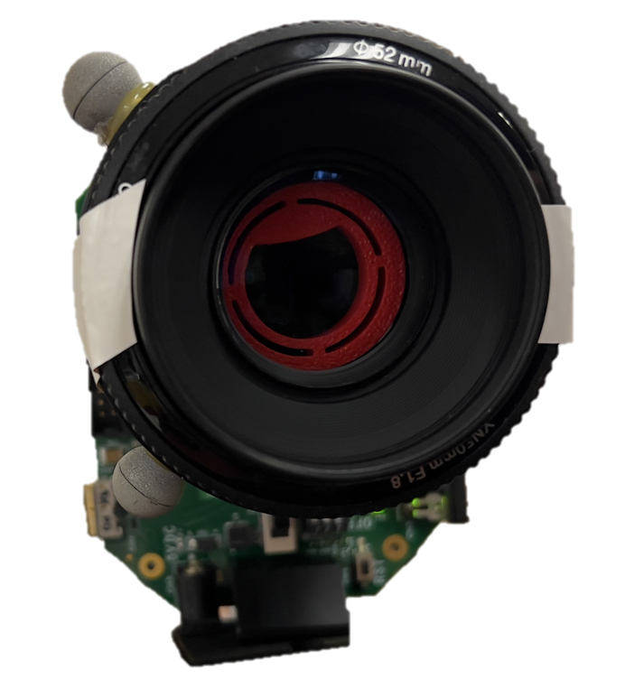
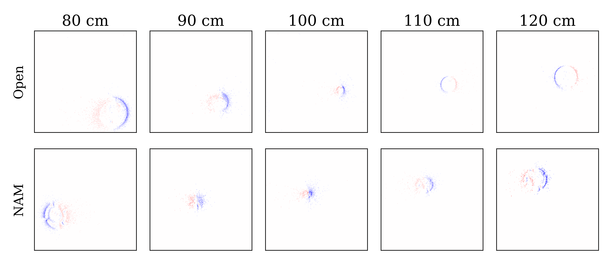
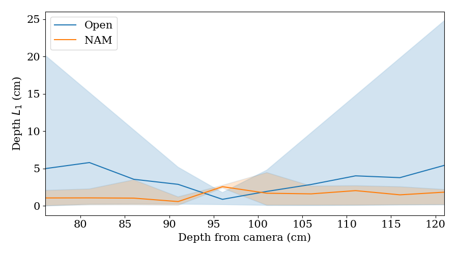
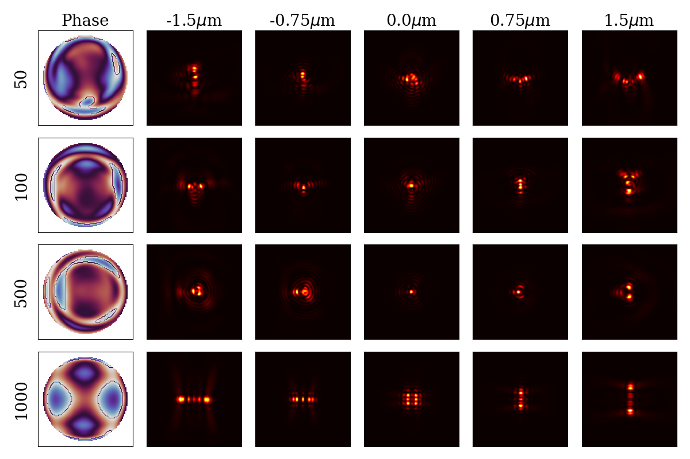
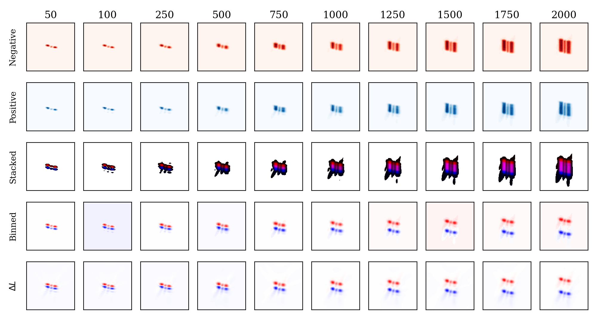

CodedEvents: Optimal Point-Spread-Function Engineering for
3D-Tracking with Event Cameras
Supplementary Material
Figure 2. Real-world 3D tracking. Comparison between NAM
and Open apertures for depth estimation at 1000FPS. Error bars
show the 90% interquartile range.
Figure 1. Prototype. Top: The fabricated mask is placed at the
S3. The Effects of Particle Speed
aperture plane of an event camera with a 50mm focal length lens.
Bottom: Sample captured event frames for a point source.
We have shown CRB depends on particle speed; a nat-
ural question is does the optimal design change with re-
spect to speed. We optimize our neural phase mask us-
S1. Hardware Prototype
ing the CRB objective function with fixed particle speeds—
{50, 100, 500, 1000}nm per time step. Our learned designs
We performed a real-world experiment for tracking a point
are shown in Figure 3. When a particle moves quickly rela-
light source at meter scale using a binary amplitude mask
tive to the binned interval, the optimal design resembles the
and a Prophessee EVK3 event camera. Specifically, we
Fisher phase pattern found for traditional CMOS sensors.
fabricated the NAM mask at 20mm diameter scale on a
One can explain this collapse to the original Fisher mask
Creality Ender 3 S1 Pro using 1.75mm PLA filament (see
design as follows. As a particle moves faster, the captured
Figure 1). Then, we captured an event dataset by mov-
binned event frame looks more similar to the composition
ing a point source at discrete depth planes ranging between
of a negative PSF at the start location and a positive PSF at
75cm and 125cm with and without our coded aperture. For
the end location (Figure 4). This suggests that single-point
all measurements, the camera was focused at 100cm. We
event tracking mirrors two-point CMOS tracking.
binned events in 1ms intervals to achieve an effective frame
rate of 1000 FPS and trained a CNN to estimate the event
S4. Log-Intensity Difference Approximation
frame’s depth. Results in Figure 2 demonstrate improved
In this section, we prove the log-intensity difference ap-
tracking performance compared to an open aperture, partic-
proximation we consider when deriving the Cram´er Rao
ularly at depths where the point source is defocused.
Bound is proportional to binned event frames.
Assume an idealized event camera model, where an
S2. Accumulation Time
event is triggered as soon as the log-intensity change be-
tween the reference and the current intensity equals some
Cutting-edge event cameras offer 10kHz fresh rates; even
threshold,
with
T . Consider producing a binned event frame
16-frame accumulation, the camera effectively oper-
for a time interval [t
ates at
start, tend].
For a single pixel, let
625FPS — much faster than conventional CMOS
the sequence of events over this interval occur at times
sensors. We also retrained our CNN-based tracking algo-
t
rithm on ‘pure’ event frames with no accumulation. Overall
1, t2, . . . tn and have polarities p1, p2, . . . , pn 2 {
1, 1}.
Let f(t) be the log-intensity at time t for the same pixel and
performance degraded: NPM by +45% RMSE and NAM
be continuous over the interval.
by +54% RMSE. Alternative architectures such as Spiking
Neural Networks designed for sparse binary measurements
Lemma S4.1. The log-intensity difference, f(tend)
may be better suited for processing ‘pure’ events.
f (tstart), is proportional to the binned event pixel value,

As an event camera becomes more sensitive to change
(T decreases), the approximation’s percent error decreases
because the magnitude of the binned event frame increases
but the total absolute error is fixed at most 1.
Figure 3. Designed Phase Masks and corresponding PSFs for
specific speeds. Each row visualizes the neural phase mask de-
signed for tracking particles moving at N nanometers per time
interval. Observe that the optimal design for ‘fast’ moving parti-
cles is the Fisher design.
Pn p
i=1
i, with error |✏| < 1.
n
X
f (tend)
f (tstart) / ✏ +
pi
(24)
i=1
Proof. By assumption, the magnitude of the change corre-
sponding to each event is T . Notice that T pi is the log-
intensity difference between the previous event time (the
reference) and the current event time.
n
X
1 n
X
pi =
f (t
T
i)
f (ti 1)
(25)
i=1
i=1
The right-hand side is a telescoping sum,
n
X f(ti) f(ti 1) = f(tn) f(t0).
(26)
i=1
t0 = tstart because the first event must occur t1 t0 after the
start of the interval. Then, the binned event frame is
n
X
1
pi =
(f (t
T
n)
f (tstart)) .
(27)
i=1
Finally, |f(tn) f(tend)| = | | < T because if the quan-
tity exceeded the threshold, an additional event would be
triggered. Substitute tend for tn.
n
X
1
pi =
(f (t
T
end)
f (tstart) + )
(28)
i=1
1
=
(f (t
T
end)
f (tstart)) + ✏
(29)
Thus, a binned event frame can be approximated as log-
intensity difference divided by T with error |✏| < 1.

Figure 4. Event camera measurements of a moving particle with the Fisher mask. Motion is simulated over a fixed time interval with
100 event samples. Observe a ‘fast’ moving particle produces an event frame with two copies of a regular PSF: a negative copy at the start
location, and a positive copy at the end location. Row 1: negative event count over the time interval. Row 2: positive event count over the
time interval. Row 3: the red channel visualizes negative events and the blue channel visualizes positive events. The pink regions represent
where the events cancel in a binned measurement. Row 4: binned event frame pos
neg. Row 5: log-intensity difference
L.
Document Outline